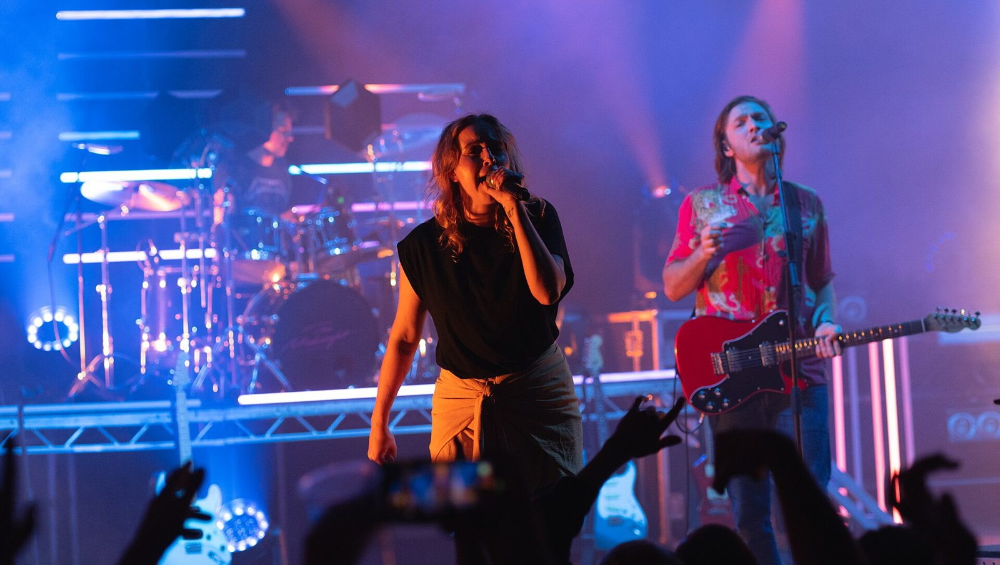

References / Photograph / 555
The Midnight live at Brixton Academy, 2022
A concert photograph of the synthwave band The Midnight at Brixton Academy, London: performers in violet and magenta haze in front of white horizontal light bars.
- Source
- Flickr: Raph_PH, MidnightBrixton070522 (14 of 30)
- Creator
- Raph_PH (photographer)
- Made
- 2022-05-07 21:09 (date given on Commons)
- Style
- Synthwave (agent-proposed, not yet reviewed by a person)
- Moods
- Nocturnal, romantic, energetic
- Evidence
- Inspected a 1920 px rendering of the 5977 × 3378 original through Wikimedia Commons_(52061571120).jpg) and stored a reduced copy. Previews of eight other photos from the same set were compared; this one shows the clearest magenta and blue light.
- Reviewed
- Rights
- Open license, stored. License: CC-BY-2.0. Rights policy
Context
The photographer published a set of 30 photographs of The Midnight at Brixton Academy on 7 May 2022 under CC BY 2.0. A Commons review bot confirmed the license on 10 May 2022. Commons files it under Category:The Midnight and Concerts at Brixton Academy. Wikimedia Commons_(52061571120).jpg).
The Midnight released its first album, Endless Summer, in 2016 (record). The set’s photo 30 shows the venue marquee reading “THE MIDNIGHT 7TH MAY SOLD OUT”.
Observed
- A singer in a black top sings into a hand-held microphone at the centre. A guitarist in a pink and red patterned shirt with a red guitar sings at a stand on the right. A drummer sits behind them.
- The stage is filled with haze lit violet and magenta from above and blue from the left.
- Thin white light bars run horizontally across the back of the stage, stacked at intervals. Vertical pink light tubes stand at the right.
- Round LED fixtures glow as white rings at the lower left. Raised hands and a phone screen in silhouette fill the bottom edge.
Why it belongs
The stacked horizontal light bars echo the cut bands of the striped sun, and the magenta, violet, and blue haze is the style’s palette in real light. It shows the style as a live, physical experience rather than a flat graphic.
Borrow
Stack thin, evenly spaced horizontal light lines behind a central subject, as a stage-scale version of the striped sun.
Light a dark scene from two sides, magenta from above and blue from the side.
Measured
Machine-extracted by tools/image-traits.py on . Full measurement.
- Mean chroma
- 0.33
- Palette
- #0d090d 13%
- #6c60bf 11%
- #5e4988 5%
- #382f5a 5%
- #6a54a4 5%
- #443c74 4%
- #63426d 4%
- #4993f7 4%

